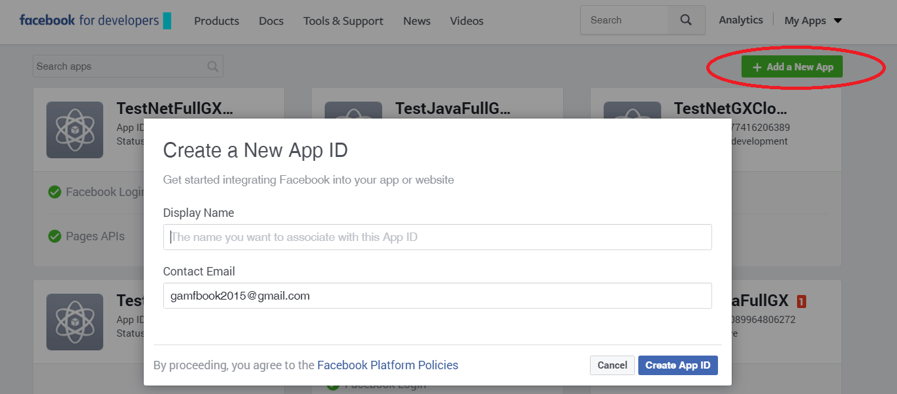
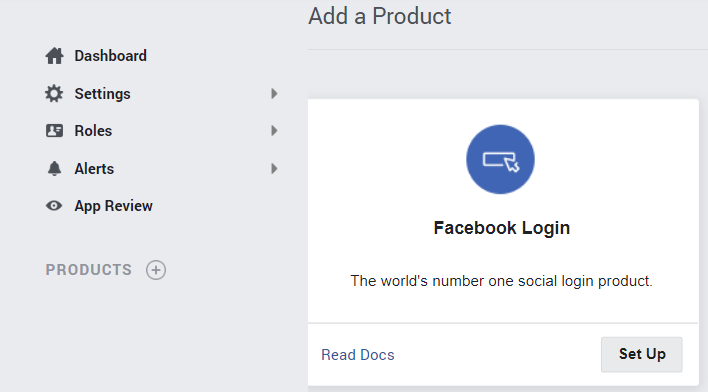
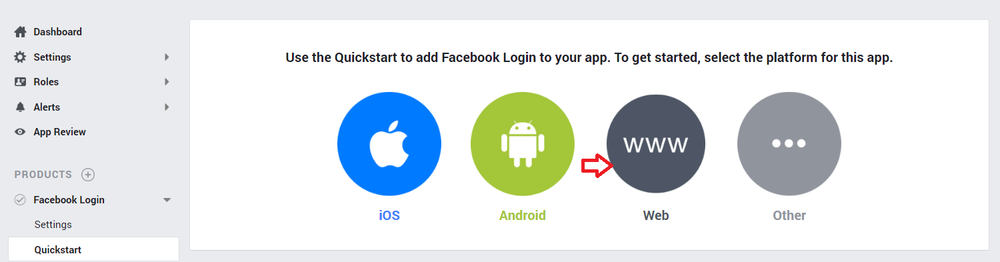
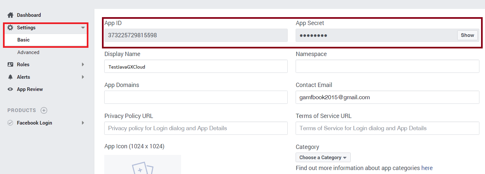
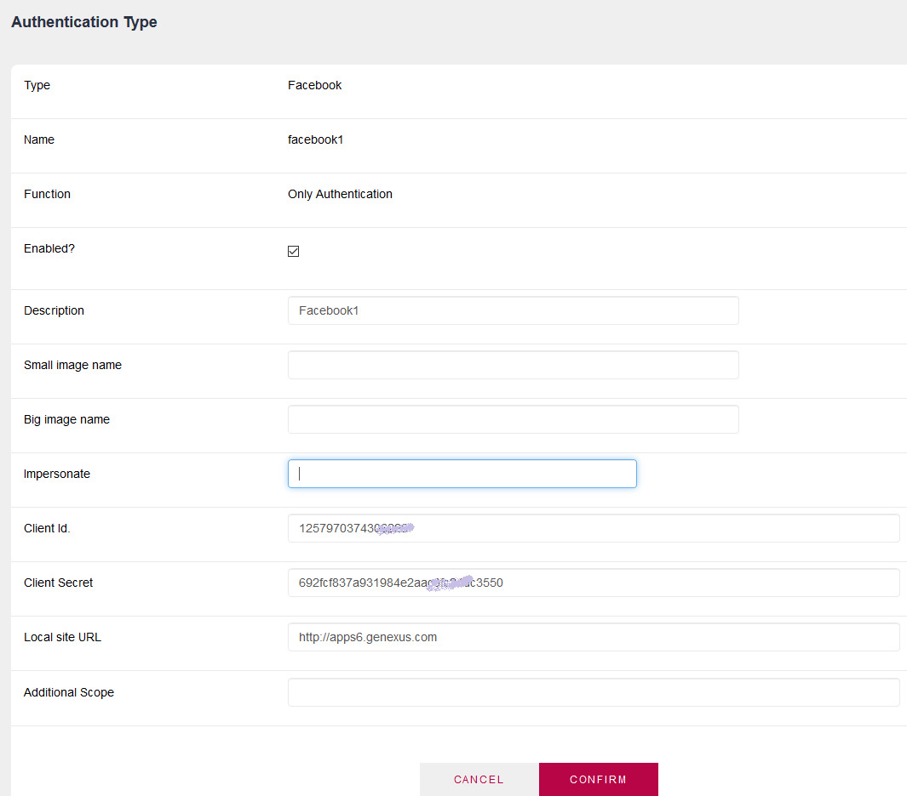

GAM - Facebook Authentication Type
GeneXus Access Manager provides a way to authenticate using Facebook.
Summary
Steps to follow
1. Create a "Facebook client application"
Create a "Facebook client application" in the Facebook site and obtain App Id and App Secret for that application.
Go to Facebook for developers (http://developers.facebook.com/) > My apps > Add a new app, as shown in the following figures:



Enter the Site URL = http://<domain> (eg.: apps5.genexus.com).

Go through settings > Basic, to get the App Id and App Secret of the application.

Go through Products > Facebook Login > Settings. There, enter a valid value for "Valid OAuth redirect URIs" field.
A valid format is : https://<server>/<base url>/oauth/gam/callback
You can enter as many URIs as you want in that field, for example, if the REST Web Services of the mobile application are separate from Web application, you need to add the URL as well, following the format :
https://<server>/<Services base url >/oauth/gam/callback
Note also that "Web Oauth Login" must always be set to YES.
2. Define "Facebook Authentication Type"
Define "Facebook Authentication Type" using the GAM backend or the GAM API. Go through Authentication Types link.

Important note:The Local Site URL specified is only the domain where the application runs. You don't need to enter the complete site URL. For example https://apps6.genexus.com.
If you enter the complete Site URL is also right, but never include the "/servlet" in Java.
Facebook Authentication Type can be used in Web Applications and Native Mobile applications also.
Web Applications
See the GAMExampleLogin object for details about how the login is executed.
Considerations: The LoginFacebook function doesn't work as expected in popup windows (the same happens to LoginTwitter). This is a limitation of those sites, who don't support a redirect from an HTML iframe. For a workaround, see SAC 34259
Native Mobile Applications
In the case of Native Mobile applications, you need to add an event in the login object to authenticate using Facebook.
The logic inside the event associated will include a call to a method of Actions external object, named "LoginExternal".
The first parameter is based on the GAMAuthenticationTypes domain, and its value should be "Facebook".
The &User and &password parameters are ignored in this case.
The &LoginExternalAdditionalParameters has an "AuthenticationTypeName" property where you can set the name of the Authentication Type. This is due to the fact that more than one Facebook Authentication Type can be defined in the Repository.
Event 'Facebook'
Composite
&LoginExternalAdditionalParameters.AuthenticationTypeName = !"facebook1"
GeneXus.SD.Actions.LoginExternal(GAMAuthenticationTypes.Facebook, &User, &Password, &LoginExternalAdditionalParameters)
Return
EndComposite
EndEvent
Another way to program the Facebook login, when you only have one Facebook Authentication Type in the repository, is the following (without passing the &LoginExternalAdditionalParameters):
Event 'Facebook' Composite GeneXus.SD.Actions.LoginExternal(GAMAuthenticationTypes.Facebook, &User, &Password) Return EndComposite EndEvent
See GAM Login Method for details.
Software Requirements
- Java: JDK 1.7 or upper is required to be installed on the application server. Otherwise, the Facebook certificate has to be installed in the key store of the JVM.
- Csharp: The certificate of Facebook has to be installed on the Windows server.
Notes:
1. Facebook Authentication is solved using OAuth.
2. In case you want to "work with friends", or do any particular action after the user has logged in, you need to communicate with the Facebook API. In that case, you'll probably need to get the ExternalToken method of GAMSession EO. The result of invoking this method should be passed to the Facebook API.
See Also
GAM: Facebook Interaction Sample
GAM - Twitter Authentication Type
GAM - Google Authentication Type
Additional Scope Property for GAM Google / Facebook Authentication Types
iOS 6.0 Facebook Integration
Windows Phone Facebook Integration